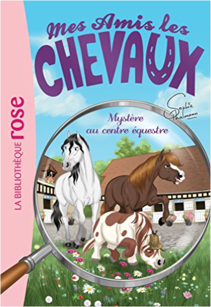

Books
Movies
Albums
Videogames
Games
BD
BD Camille
Blu-ray
Business
Camille
Comics
Cooking
Lego
Manga
Pauline
Photography
Sport
Star Wars
T'choupi
Travel
TV Shows
Un livre dont vous êtes le héro
Vinyl
Walt Disney
81
82
83
84
85
mes amis les chevaux, tome 8 : le loup solitaire
sophie thalmann
mes amis les chevaux, tome 9 : sous le feu des projecteurs
sophie thalmann
mes amis les chevaux, tome 10 - le concours de beauté
sophie thalmann
mes amis les chevaux, tome 11 - peur sur l'écurie
sophie thalmann, natacha godeau

mes amis les chevaux, tome 12 : mystère au centre équestre
sophie thalmann
mes amis les chevaux, tome 13 : moustique a mal aux dents !
sophie thalmann
mes amis les chevaux, tome 14 - une journée à la mer
sophie thalmann
mes amis les chevaux, tome 15 : lulu a disparu !
sophie thalmann
mes amis les chevaux, tome 16 : moustique est amoureux
sophie thalmann
mes amis les chevaux, tome 17 : le saut d'obstacles
sophie thalmann
mes amis les chevaux, tome 18 : la mascotte du centre équestre
sophie thalmann
mes amis les chevaux, tome 19 : le secret d'andalou
sophie thalmann
81
82
83
84
85


 Made with Delicious Library Made with Delicious Library
Made with Delicious Library Made with Delicious Library